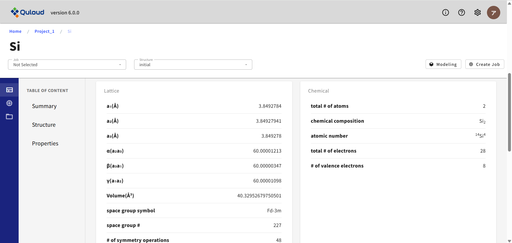

4. 登録情報詳細
ダッシュボードの一覧から項目名をクリックすることで、下図のような詳細画面に遷移します。

ここでは各 Material/Job の詳細な情報や、 計算終了後は、その計算の結果等を確認することができます。またサイドメニューから、 登録情報をベースにした新たな Job の作成やモデリングを行うこともできます。 詳細画面からの Job 作成は全てGUI形式で行うため、 ３章で説明した方法よりも直感的な操作で材料計算を実行することができます。
4.1. 原子構造詳細
下図に示すように、詳細画面では、 ２枚のパネルを並べたような形式で原子構造の情報を表示させています。
4.2. 計算ジョブ詳細（未改訂）
画面左端にあるアイコンの矢印をクリックすると、図 13のようにサイドメニューの領域が広がります。 サイドメニューには
計算ジョブの作成（Calculation）
原子構造モデリング（Modeling）
出力ファイルおよびログファイル（Files）
といった操作項目が並んでいます （サイドメニューを閉じ、アイコンだけが表示されている状態でも同様の操作が可能です）
サイドメニュー「Calculation」をクリックすると、 材料シミュレーションソフトウェアのカテゴリーを選択するウィンドウが表示されます。現在
第一原理計算
古典分子動力学法
アドバンスド古典MD（機械学習MD）
第一原理磁性材料シミュレータ
が選択可能です。カテゴリーを選択すると、各カテゴリーごとのさらに詳細な計算機能の一覧が表示されます。 各ソフトウェアカテゴリの計算機能の詳細については章を改めて説明します。
サイドメニュー「Modeling」をクリックすると、モデリングのタイプを選択するメニューが表示されます。 現在
Basic（セル変形、スーパーセル、原子削除、置換、移動）
Surface ＆Slabs（表面スラブモデル）
Interface（界面モデル）
Add Molecule（表面分子吸着）
Add Cell（孤立分子からスーパーセルモデルを作る）
という選択肢があります。モデリング機能および各メニューの詳細については章を改めて説明します。
サイドメニュー「Files」をクリックすると、各ジョブの入力ファイル（原子構造ファイル）、出力ファイル、 およびログファイルの確認およびダウンロードが可能です。
また、ファイル名をクリックすると、テキストファイルであれば、その内容を確認することができ、 さらにジョブ実行前であれば、編集も可能です。この機能を用いて、GUIで提供していない、 各計算ソフトの設定を行うことが可能です。